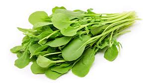

Canteiro 2
Conheça as variedades cultivadas na nossa horta escolar
Rúcula

Folhas verdes de sabor picante e marcante. Muito usada em saladas, pizzas e sanduÃches, combina bem com queijos, tomates e temperos leves.
CaracterÃsticas Principais
Nome cientÃfico
Eruca sativa
Folhas
Finas, recortadas, sabor picante
Clima
Ameno (15–22 °C), suporta frio leve
Ciclo de cultivo
40–55 dias
Beterraba

Raiz adocicada e roxa, usada em saladas, sucos, sopas e refogados. Suas folhas também são comestÃveis e ricas em nutrientes.
CaracterÃsticas Principais
Nome cientÃfico
Beta vulgaris
Folhas
Grandes, verde-avermelhadas, nervuras roxas
Clima
Ameno (15–20 °C)
Ciclo de cultivo
70–90 dias